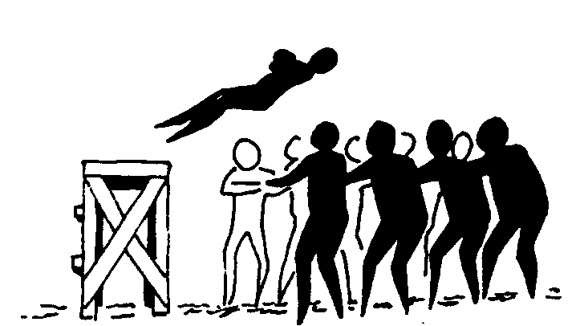

Personal Branding Para /^(?:Futuros)?$/ Desarrolladores
¿Quién soy?
Soy Alberto Varela y trabajo en Travioor
www.berriart.com | alberto@berriart.com | @artberri
Sondeo
(Levantad la mano todos, por favor)
Ahora, baja la mano solo si...
- no eres un desarrollador
- no sientes pasión por este trabajo
- no tienes una web/proyecto propio
- no has publicado nunca código creado por ti

Estado del arte
Estado del arte (el otro lado)
Luis Iván Cuende
- Con 12 años creó un sistema operativo basado en Linux, de nombre Asturix
- Con 17 años funda Cardwee y lanzan aplicación para crear y almacenar tarjetas de fidelización

Jorge Izquierdo
- Con 13 años colocó dos aplicaciones en AppStor y Apple le seleccionó para acudir a su conferencia para desarrolladores en San Francisco
- Con 16 años funda Cardwee junto con Luis Cuende
Javier Agüera
- Funda GeeksPhone con 16 años
- En 2010 su dispositivo GeeksPhone One se había convertido en el primer smartphone europeo para Android.
Horacio Martos y Andrés Bou
- Fundaron Social Point con 23 años
- Su juego Dragon City alcanzó el número #7 en Facebook con 19,2 millones de usuarios al mes
El gran requisito
La dificultad
Que te crean
Una imagen Unas líneas de código valen más que mil palabras
¡Gracias!

Slides: https://www.berriart.com/talks/personal-branding-developers/
Home Image: Luis Llerena | Unsplash